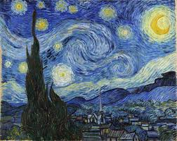

A Noite Estrelada (1889), pintada por Vincent van Gogh enquanto estava internado em um hospital psiquiátrico na França, é uma obra-prima que traduz a complexidade emocional do artista por meio de pinceladas vigorosas na técnica do impasto e de um contraste marcante entre os tons melancólicos de azul e o brilho intenso do amarelo. O quadro vai além da paisagem noturna: o céu em redemoinhos perfeitos — que curiosamente replicam a física real da turbulência dos fluidos — reflete sua mente agitada, enquanto o cipreste em primeiro plano age como um símbolo de luto e ligação com o infinito, e o vilarejo fictício resgata memórias afetivas de sua infância. Apesar de o próprio Van Gogh ter considerado a pintura um fracasso por ser abstrata demais, a obra tornou-se um dos maiores ícones da história da arte mundial, simbolizando a eterna busca humana por esperança em meio à escuridão.
